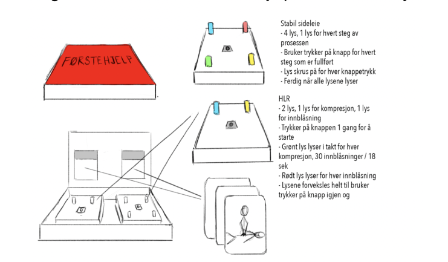
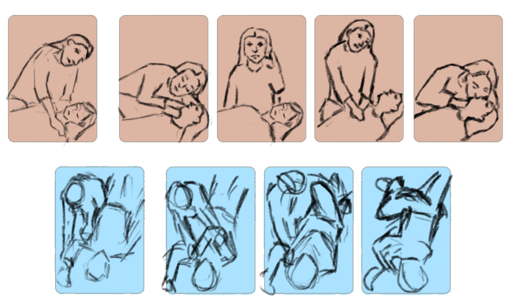

I collaborated with a team of five designers on this student project to develop a high fidelity prototype aimed at helping our user group to strengthen their first aid knowledge.
By following a iterative design process we created a tangible interactive prototype, where we combined Arduino with participatory design to develop a desirable object
for our user group, with our user group.
The research question was "How can we enhance first aid knowledge among parents with immigrant backgrounds from Afghanistan?"
Process
Duration of the project was four months which was divided into five iterations. We worked agile in teams, combining some of the flexible aspects of Kanban together with aspects of Scrum to best fit the strict deadlines and goals. We did this project spring 2020 during the Covid-19 lock-down, which limited the access to our sources - so we had to get creative with what we had!
My contributions
In this project, my primary responsibilities involved developing the prototype including the tecnhnical aspects with Arduino, as well as testing and evaluation with users. Additionally, I was in charge of planning and writing both the project report and co-writing the technical report.
First aid at 1-1-3?
Issue
Although first aid is a fundamental skill that everyone should master, emergency situations can induce uncertainty, leading to valuable time lost. Our goal is to decrease the uncertainty associated with performing first aid and enhance it’s efficiency.
User group
According to forskning.no, families with minority languages have poorer knowledge of first aid and prevention of injuries and accidents compared to Norwegian-speaking families. Therefore, we chose to focus on immigrants, specifically narrowing our attention to parents with immigrant backgrounds from Afghanistan. We saw this as a relevant topic for this target group, and we had access to this user group.
Technical aspect
Arduino UNO were used to make his prototype tangible, enabling it to signal using LEDs. This was achieved through the integration of buttons and sound features connected to a rescue doll.
Evaluation during the design process
For each iteration of our prototyping process, we conducted evaluations with users and adjusted the design of the prototype according to the feedback received. This approach ensured that we were consistently working towards a final prototype that genuinely met the users' needs and desires.
- 
- 
Takeaways
Conducting the "Designing with users" method was a quite challenging part during the COVID-19 lock-down, in addition to data collection and evaluations, which all were conducted over Zoom. This made us aware of the significant difference in communicating over Zoom versus in person, meaning we had to adjust our communication methods when we noticed lack of understanding. In return did this encouraged us to think even more creatively, pushing us to adapt innovative approaches on a short time. I found this to be very educational, imparting valuable lessons that I have since applied to other projects.